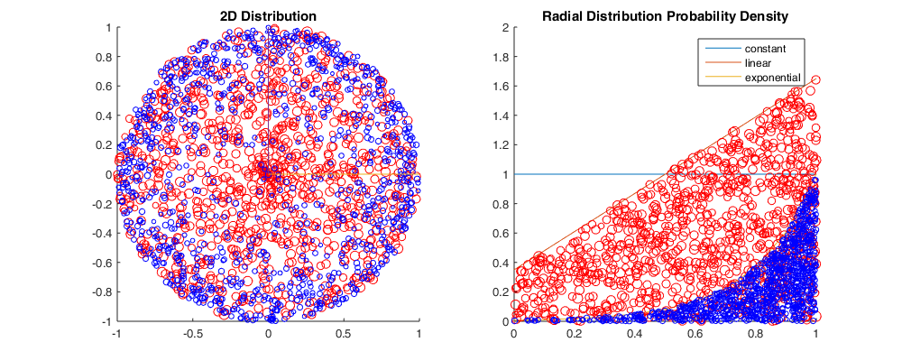

Contents
clear all; close all; tic;
PLOTTING DISTRIBUTION BOUNDS
% X-RANGE [x] xlim = 1; samples = 10; x = 0:(1/samples):xlim; % CONSTANT DISTRIBUTION [y_k] y_k = []; for i=1:samples+1 yi_k = 1; y_k = [y_k, yi_k]; end % LINEAR DISTRIBUTION [y_l] % max value for m = 2 y_l = []; m = 1.3; % only edit this value c = 1-(xlim/2)*m; for i=1:samples+1 yi_l = m*x(i)+c; y_l = [y_l, yi_l]; end % EXPONENTIAL DISTRIBUTION [y_e] % 1-x y_e = []; a = 5; for i=1:samples+1 yi_e = exp(-a*(1-x(i))); y_e = [y_e, yi_e]; end
GENERATING RANDOM SAMPLES, 2D DISTRIBUTIONS
% variables N = 1000; % number of stochastic samples n_mean = 50; % flake size n_var = 10; % flake variance % declaring empty arrays x_values = []; y_values = []; a_values = []; s_values = []; x1_values = []; y1_values = []; quadrant = 1; count = 1; while count < N rng_x = rand(1); % LINEAR y = m*rng_x + c; y_max = m*1 + c; % EXPONENTIAL %a = 5; %y = 1 * exp(-a*(xlim-rng_x)); %y_max = 1 * exp(0); rng_y = rand(1)*(y_max); rng_a = rand(1)*2*pi/4; rng_s = n_mean + randn(1)*n_var; % evaluating whether values fall within probability density if (rng_y < y) x_values = [x_values, rng_x]; y_values = [y_values, rng_y]; % this line is irrelevant to 2D distribution a_values = [a_values, rng_a]; s_values = [s_values, rng_s]; h = rng_x; % h is the hypoteneuse dx = h - h*cos(rng_a); dy = h*sin(rng_a); % assigning points across each quadrant if quadrant == 1 x1_values = [x1_values, (h - dx)]; y1_values = [y1_values, (+dy)]; elseif quadrant == 2 x1_values = [x1_values, (-h + dx)]; y1_values = [y1_values, (+dy)]; elseif quadrant == 3 x1_values = [x1_values, (-h + dx)]; y1_values = [y1_values, (-dy)]; elseif quadrant == 4 x1_values = [x1_values, (+h - dx)]; y1_values = [y1_values, (-dy)]; end % increment counter if quadrant == 4 quadrant = 1; else quadrant = quadrant + 1; end count = count + 1; end end
REPEATING FOR A SECOND SAMPLE SET
% variables N2 = 1000; % number of stochastic samples n_mean = 20; % flake size n_var = 4; % flake variance % declaring empty arrays x_values_s2 = []; y_values_s2 = []; a_values_s2 = []; s_values_s2 = []; x1_values_s2 = []; y1_values_s2 = []; quadrant = 1; count = 1; while count < N2 rng_x = rand(1); % LINEAR %y = m*rng_x + c; %y_max = m*1 + c; % EXPONENTIAL a = 5; y = 1 * exp(-a*(xlim-rng_x)); y_max = 1 * exp(0); rng_y = rand(1)*y_max; rng_a = rand(1)*2*pi/4; rng_s = n_mean + randn(1)*n_var; % LINEAR %y = m*rng_x + c; % EXPONENTIAL a = 5; y = 1 * exp(-a*(xlim-rng_x)); % evaluating whether values fall within probability density if (rng_y < y) x_values_s2 = [x_values_s2, rng_x]; y_values_s2 = [y_values_s2, rng_y]; % this line is irrelevant to 2D distribution a_values_s2 = [a_values_s2, rng_a]; s_values_s2 = [s_values_s2, rng_s]; h = rng_x; % h is the hypoteneuse dx = h - h*cos(rng_a); dy = h*sin(rng_a); % assigning points across each quadrant if quadrant == 1 x1_values_s2 = [x1_values_s2, (h - dx)]; y1_values_s2 = [y1_values_s2, (+dy)]; elseif quadrant == 2 x1_values_s2 = [x1_values_s2, (-h + dx)]; y1_values_s2 = [y1_values_s2, (+dy)]; elseif quadrant == 3 x1_values_s2 = [x1_values_s2, (-h + dx)]; y1_values_s2 = [y1_values_s2, (-dy)]; elseif quadrant == 4 x1_values_s2 = [x1_values_s2, (+h - dx)]; y1_values_s2 = [y1_values_s2, (-dy)]; end % increment counter if quadrant == 4 quadrant = 1; else quadrant = quadrant + 1; end count = count + 1; end end
RNG DISTRIBUTION ACROSS CIRCLE(MONTE CARLO METHOD)
for circle of radius 1
r_dist_x = []; r_dist_y = []; for i=1:N r_x = rand(1); r_y = rand(1); r_ylim = sqrt(1 - r_x^2); if r_y < r_ylim r_dist_x = [r_dist_x, r_x]; r_dist_y = [r_dist_y, r_y]; end end
PLOTTING
figure(1); set(figure(1), 'Position', [100, 100, 1000, 400]); % 2D circular distribution subplot(1,2,1) title('2D Distribution') hold on scatter(x1_values, y1_values, s_values, 'r'); scatter(x1_values_s2, y1_values_s2, s_values_s2, 'b'); axis([-xlim, xlim, -xlim, xlim]); %also plot +x,+y lines plot([0,1],[0,0]); plot([0,0],[0,1]); hold off % 1D distribution subplot(1,2,2) title('Radial Distribution Probability Density') hold on plot(x,y_k); plot(x,y_l); plot(x,y_e); scatter(x_values, y_values, s_values, 'r'); scatter(x_values_s2, y_values_s2, s_values_s2, 'b'); legend('constant', 'linear', 'exponential'); axis([0,1,0,2]); hold off %FIGURE(2): %figure(2); %set(figure(2), 'Position', [550, 100, 1000, 400]); %subplot(1,2,1) %title('Random Sampling within a circle'); %scatter(r_dist_x, r_dist_y); %axis([0,1,0,1]); %subplot(1,2,2) %title('Probability density across x'); %bins = 50; %[areaDistribution, binAreas] = hist(r_dist_y, bins); %bar(binAreas, areaDistribution, 'BarWidth', 1.0); %axis([0,1,0,inf]); t = toc; disp('Time for analysis (sec):') disp(t)
Time for analysis (sec):
1.3049
